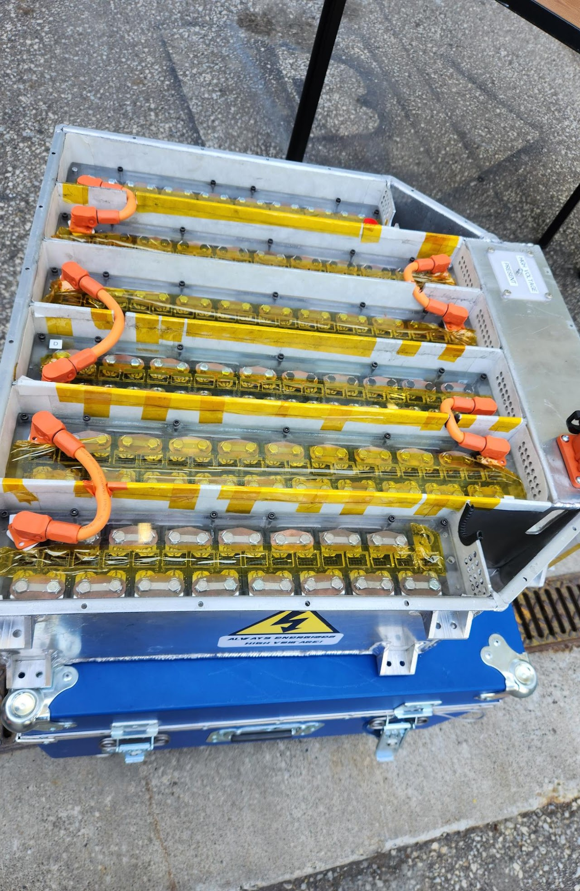
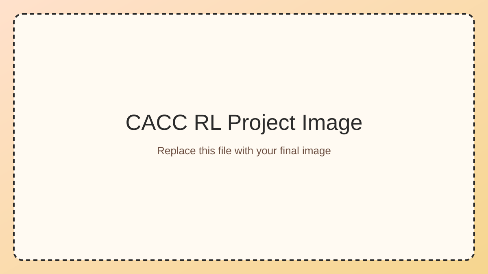
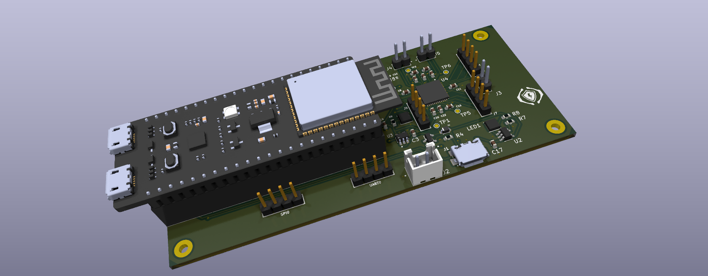
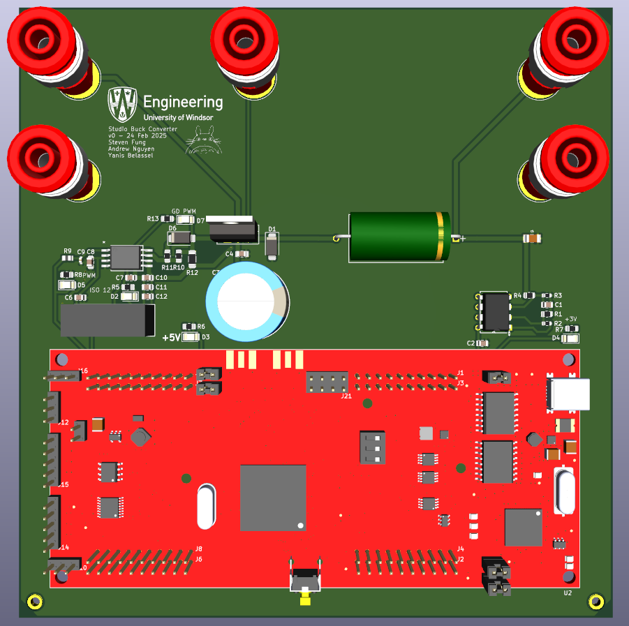
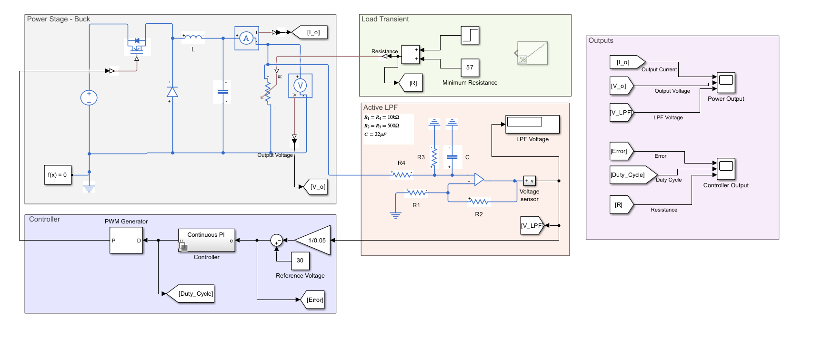
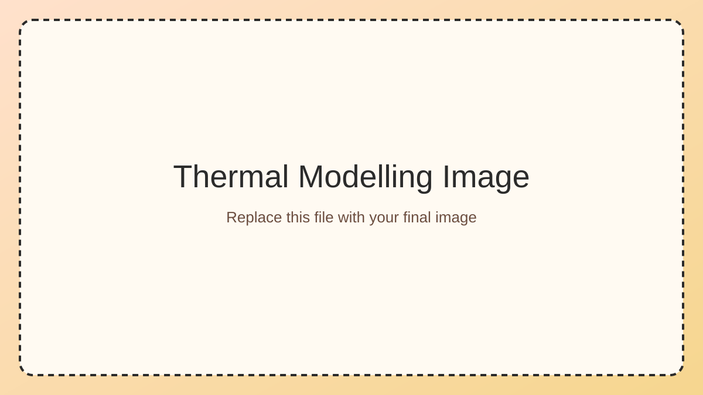

FSAE EV Accumulator

Led electrical design and integration for a 470V accumulator pack with over 500 cells across 6 modules for the UWindsor FSAE EV platform.
- Coordinated module sizing and interface requirements across teams.
- Revised precharge board design and improved robustness for race use.
- Led custom modular BMS development using TI BQ796xx + C2000 controllers.
Connected Autonomous Vehicles (CACC-RL)

Built and evaluated RL-driven cooperative active cruise control environments using traffic data and custom training loops.
- Developed custom Gymnasium environment for single-agent follower control.
- Extended to multi-agent scenarios with PettingZoo.
- Tested TD3-based policies for headway stability and training efficiency.
Electrochemical Impedance Spectroscopy Capstone

Co-developed a portable EIS workflow to detect foreign substances in beverages, integrating embedded firmware, hardware design, and signal analysis.
- Adapted open-source potentiostat architecture for the project use case.
- Modified ESP32 acquisition flow for wireless data transfer and processing.
- Validated measurement quality using Nyquist analysis and model fitting.
Buck Converter With Active Control


Designed, simulated, fabricated, and tested a unidirectional buck converter with active filtering and PI/PID-based control.
- Modeled transient behavior and controller response in Simscape Electrical.
- Selected and sized PCB components to power and thermal constraints.
- Hand-soldered and debugged board-level issues through validation testing.
Thermal Modelling and Cooling Solutions for Induction Motors

Supported a novel EV motor rotor research setup through design support, procurement, and experimental infrastructure planning.
- Performed literature review on rotor/stator thermal behavior.
- Sourced motors, bearings, mounts, and instrumentation components.
- Modeled mounting systems in CATIA V5 for repeatable test setup integration.